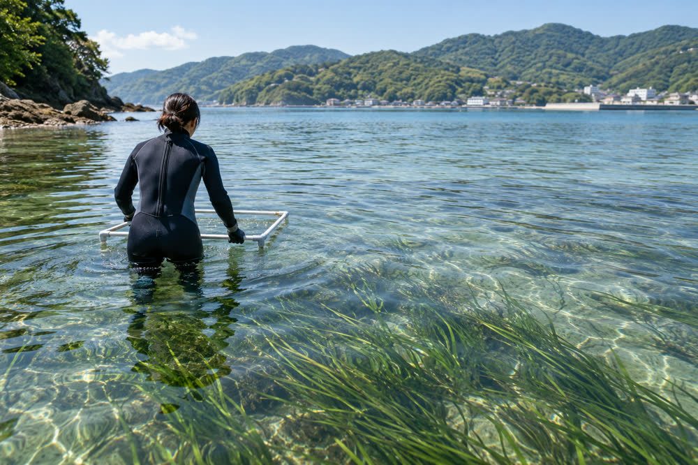

みのり湾のアマモ場、10年で38％回復 春川大が調査
春川大学の研究チームが、みのり湾のアマモ場の面積が2025年に569ヘクタールとなり、15年の412ヘクタールから38％増えたとする調査結果をまとめた。30年余りで最大の広さ。水質改善と漁業者による植え付けが奏功した一方、夏の高水温が新たな脅威になっているという。

20世紀後半に3分の1以下まで縮小したみのり湾のアマモ場が、予想を上回るペースで回復している。春川大学大学院環境科学研究科の金沢恵美教授らのチームが、今月、沿岸生態学の国際学術誌に論文を発表した。
調査によると、湾内のアマモ場は2025年に569ヘクタールで、2015年の412ヘクタールから38％増えた。1990年代初め以来の広さだが、1978年の1,240ヘクタールと比べると半分に満たない。
1,240ヘクタールから380ヘクタールへ
アマモは水深5メートルほどまでの、澄んだ浅い海の砂泥底に育つ海草だ。群落は稚魚やイカ、貝類のすみかとなり、泥を抑え、海底に炭素を蓄える。汐浜沖の浅場を今も「アマモ畑」と呼ぶ年配の漁業者は多い。
湾のアマモ場は1970年代後半から、みのり港や工業用地の埋め立て、家庭排水に含まれる栄養塩による濁りで減り続け、2005年には380ヘクタールまで落ち込んだ。白い円盤を沈めて見えなくなる深さで測る透明度は、当時、湾内の観測点の平均で3.1メートルだった。
学生時代に潜り始めた頃は、10分泳いでも泥しか見えなかった。今は場所によって、葉をかき分けて進むほどです。
春川大学 金沢恵美教授
水質改善と190万株の植え付け
研究チームは、回復の要因を二つ挙げる。一つは2012年、市内の大半の排水を処理するみのり湾浄化センターが、窒素やリンを除去する高度処理を始めたこと。透明度は2025年には平均4.6メートルまで改善し、暗すぎてアマモが育たなかった場所にも光が届くようになった。
もう一つは、みのり湾漁業協同組合の取り組みだ。組合員は2011年から、組合の施設の水槽で種から育てた苗を、毎年春と秋に小舟から手作業で植え付けてきた。その数は190万株に上る。チームが、水深や底質が同じ近くの未植栽地と比べたところ、植え付けた場所の方がはるかに高い割合で連続した群落に育っていた。
論文のためではなく、魚のためにやってきたこと。それでも、船の上から見てきたことが数字で示されるのはうれしい。
みのり湾漁協 武田勇組合長
調査では、ドローンと衛星の画像に加え、湾内120地点で潜水して株の密度を数え、画像の判読を確かめた。過去の面積は航空写真や県の調査記録を同じ方法で解析し直し、年代を比べられるようにした。
「ブルーカーボン」に期待
アマモ場は海底の泥に炭素を閉じ込める「ブルーカーボン」の担い手でもある。チームの試算では、湾のアマモ場が吸収する二酸化炭素は年約1,700トンに上る。
春川市環境課は、企業が排出量の相殺に購入するブルーカーボン・クレジットの対象にできるか検討しており、収益は植え付け事業に充てたいとしている。漁協は現在、種や水槽、燃料に年約400万円を費やし、その半分を県の補助金で賄っている。
武田組合長によると、春に市場に並ぶ小イカやマダイの稚魚の水揚げはこの5年で増えているという。ただ、今回の調査は魚の数は測っておらず、金沢教授は「直接結びつけるのは早い」と慎重だ。
次の脅威は夏の高水温
回復はまだもろい。2024年夏には浅場の水温が30.8度に達し、水深2メートルより浅い場所の一部でアマモが枯れた。翌25年には大半が回復したものの、チームは猛暑の夏が繰り返されたり、台風の高波で株が根こそぎ流されたりすれば、再び減少に転じかねないと警告する。
アマモは28度を超える水温に長くは耐えられない。2024年のような夏が当たり前になれば、最も浅い群落は深い場所へ移るか、消えてしまうでしょう。
金沢教授
チームは今後、5年ごとに全域調査を行い、120地点のうち20地点に水温計を設置して毎夏観測する。漁協は来春から、植え付け場所を水深2〜4メートルのやや深い場所に移す方針だ。
金沢教授は10月24日（土）午後2時から、春川大学北キャンパスで調査結果についての公開講座（無料、申し込み不要）を開く。